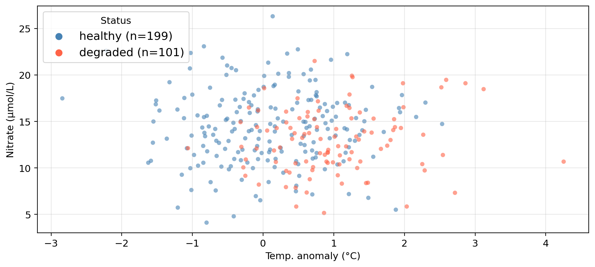
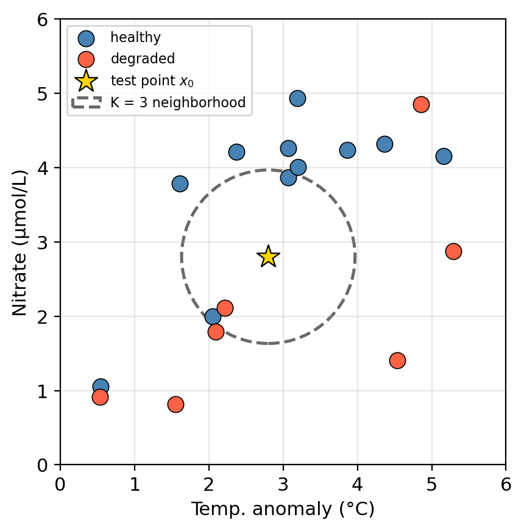
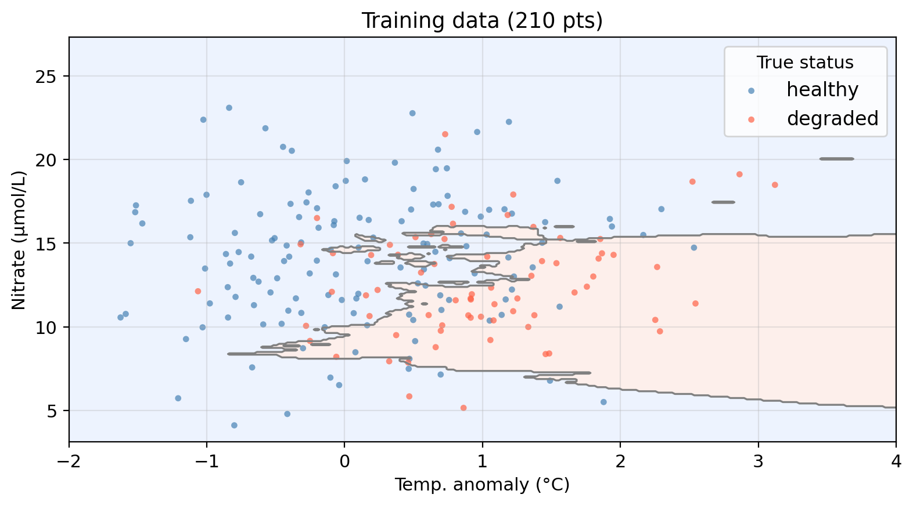
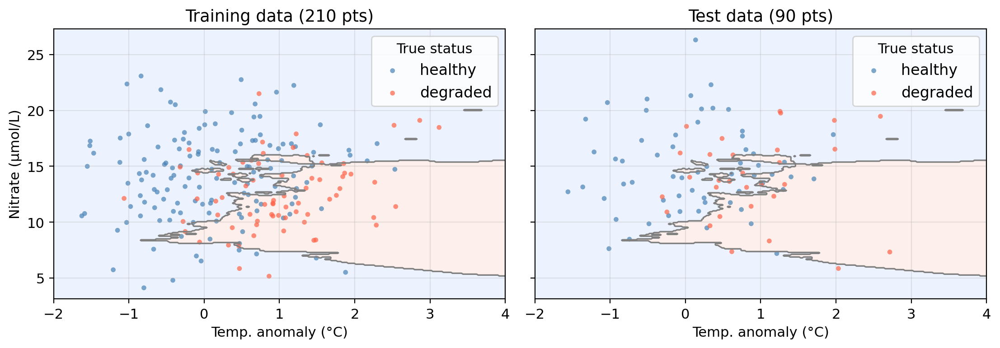
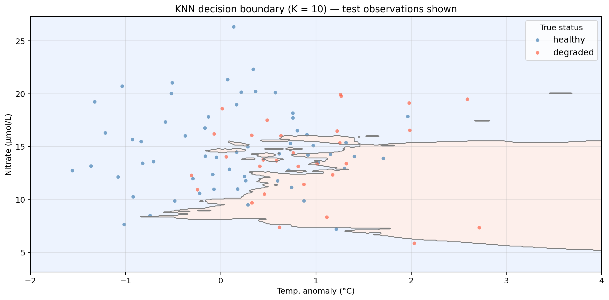
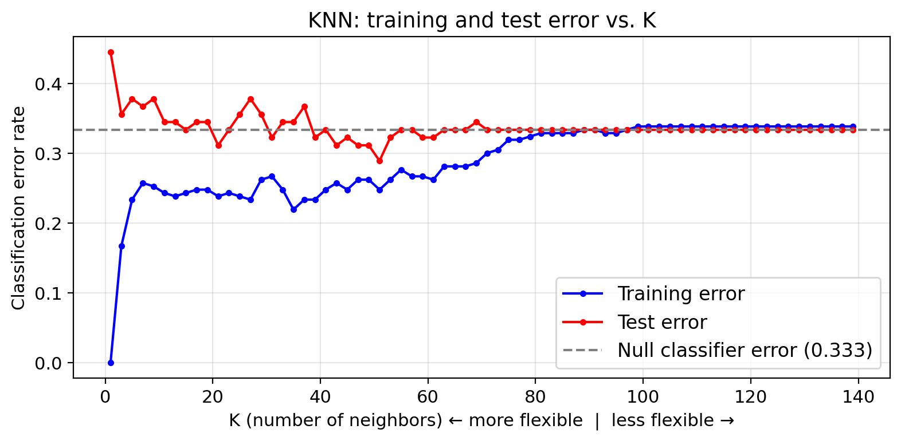
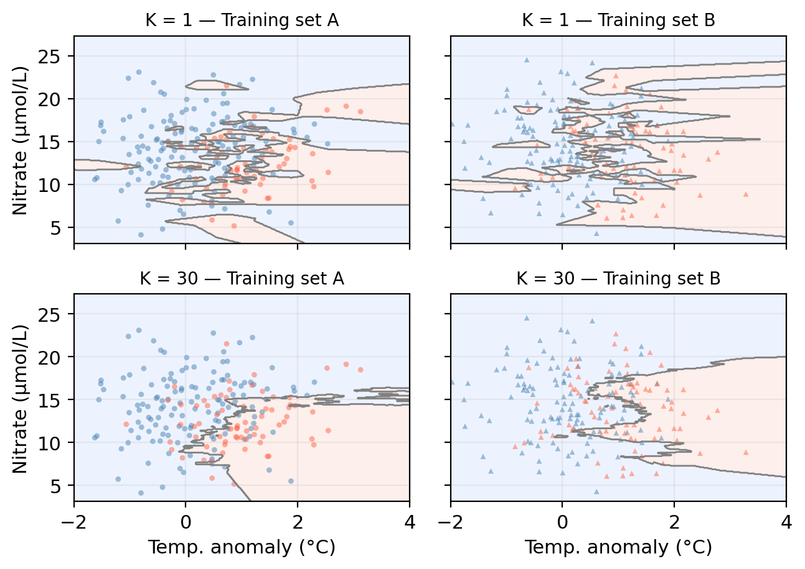
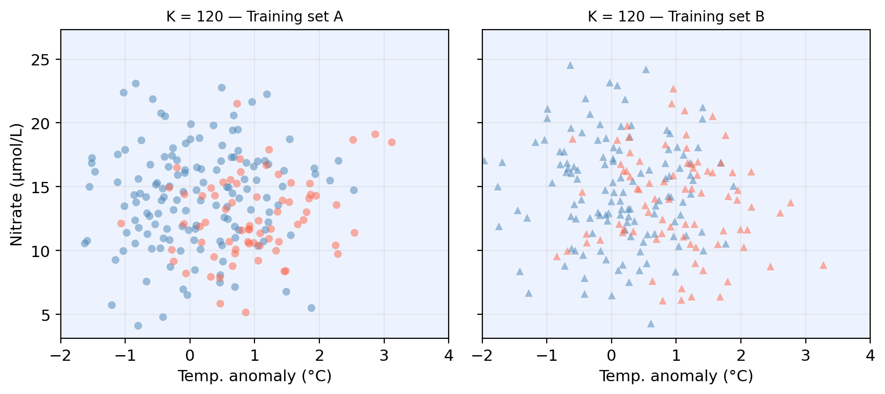

temp_anomaly— sea surface temperature anomaly (°C): deviation of ocean’s temperature from long-term averagenitrate— nitrate concentration (μmol/L)status— kelp forest condition: healthy or degraded

EDS 232
Lesson 5
KNN and accuracy metrics
In this lesson
From regression to classification
From regression to classification
So far, our response variable \(Y\) has always been quantitative.
In many real-world problems the response is qualitative (categorical): meaning the response takes a value in a discrete set of classes.
Classifying = predicting the class of a new observation.
Classic examples:
Environmental examples:
A guiding example
Our example dataset
A synthetic dataset “tracking” 300 coastal monitoring stations along CA coast:
temp_anomaly — sea surface temperature anomaly (°C): deviation of ocean’s temperature from long-term averagenitrate — nitrate concentration (μmol/L)status — kelp forest condition: healthy or degradedCan we predict whether a site is healthy or degraded
based on its oceanographic conditions?
Data overview

Synthetic data generated for educational purposes only
K-Nearest Neighbors
The KNN algorithm
Given a training set and a new test observation \(x_0\):
There is no model training or fitting.
Just store the data and vote at prediction time.
Check-in

KNN algorithm:
Using K=3:
Check-in

KNN algorithm:
Applying KNN to example data (K = 10)

Shaded regions = predicted class. Decision boundary = boundary between predicted class regions.
Points in the “wrong” region are misclassified.
Applying KNN to example data (K = 10)

Shaded regions = predicted class. Decision boundary = boundary between predicted class regions.
Points in the “wrong” region are misclassified.
KNN: pros and cons
Pros
Cons
Other considerations
Accuracy assessment for classifiers
True and false positives and negatives
| Category | True class | Predicted class | Correct? |
|---|---|---|---|
| True Positive | Positive | Positive | Yes |
| True Negative | Negative | Negative | Yes |
| False Positive | Negative | Positive | No |
| False Negative | Positive | Negative | No |
Check-in
Using healthy = positive class, classify each observation as true positive, true negative, false positive, or false negative:
| Obs | True status | Predicted |
|---|---|---|
| A | healthy | healthy |
| B | degraded | healthy |
| C | healthy | degraded |
| D | degraded | degraded |
Check-in
Using healthy = positive class, classify each observation as true positive, true negative, false positive, or false negative:
| Obs | True status | Predicted |
|---|---|---|
| A | healthy | healthy |
| B | degraded | healthy |
| C | healthy | degraded |
| D | degraded | degraded |
Check-in
Identify one true positive point, one true negative point, one false positive point, and one false negative point.

The confusion matrix
To summarize the accuracy of our classifier we
and arrange them in a confusion matrix:
| Predicted class is positive | Predicted class is negative | |
|---|---|---|
| True class is positive | TP | FN |
| True class is negative | FP | TN |
The confusion matrix shows at a glance where the classifier makes mistakes and what kinds of errors it makes.
Accuracy metrics
✏️
Accuracy metrics
Overall accuracy: fraction of correctly classified observations \[\text{accuracy} = \frac{TP + TN}{TP + FP + TN + FN}\]
Precision: of all the predicted positives, how many are truly positive? \[\text{precision} = \frac{TP}{TP + FP}\]
Recall (sensitivity): of all observations whose true class is positive, how many did we correctly identify? \[\text{recall} = \frac{TP}{TP + FN}\]
All metrics range from 0 (worst) to 1 (best).
Precision and recall trade off against each other:
The right balance depends on the cost of each error type.
Check-in
A classifier always predicts positive. What is its recall? What is its precision?
A classifier rarely predicts positve but, when it does, it is always correct. What would recall be like? And precision?
You are a conservation manager allocating resources to degraded sites. Would you prioritize precision or recall? Why?
Overall accuracy: fraction of correctly classified observations \[\text{accuracy} = \frac{TP + TN}{TP + FP + TN + FN}\]
Precision: of all the predicted positives, how many are truly positive? \[\text{precision} = \frac{TP}{TP + FP}\]
Recall (sensitivity): of all observations whose true class is positive, how many did we correctly identify? \[\text{recall} = \frac{TP}{TP + FN}\]
Check-in
A classifier always predicts positive. What is its recall? What is its precision?
A classifier rarely predicts positve but, when it does, it is always correct. What would recall be like? And precision?
You are a conservation manager allocating resources to degraded sites. Would you prioritize precision or recall? Why?
Recall = 1.0 (no true positive is ever missed). Precision is low: it predicts positive for every observation, including negatives.
High precision and low recall.
Likely recall since you want to catch as many truly degraded sites as possible. A missed degraded site (FN) means no intervention, which can have direct consequences.
The \(F_1\) score
One way of summarzing precision and recall into a single metric:
\[F_1 = \frac{2 \cdot \text{precision} \times \text{recall}}{\text{precision} + \text{recall}}\]
Check-in
The null classifier always predicts the majority class, ignoring all predictors. Any useful model should outperform it! The following table shows accuracy metrics for tne KNN (K=10) classifier and the null classifier:
Model Accuracy Precision Recall F₁ score
Null classifier 0.667 0.667 1.000 0.800
KNN (K = 10) 0.656 0.710 0.817 0.760Check-in
The null classifier always predicts the majority class, ignoring all predictors. Any useful model should outperform it! The following table shows accuracy metrics for tne KNN (K=10) classifier and the null classifier:
Model Accuracy Precision Recall F₁ score
Null classifier 0.667 0.667 1.000 0.800
KNN (K = 10) 0.656 0.710 0.817 0.760The null always predicts healthy (positive), so it never misses a true positive → perfect recall. But it misclassifies every degraded site, bringing down precision and \(F_1\).
The two classifiers have similar accuracy, yet KNN has some evidence of distinguishing between classes rather than blindly predicting the majority.
Overfitting and the bias-variance tradeoff
Classification error rate
✏️
Classification error rate
In classification we use the error rate as a simple measure of model performance:
\[\text{error rate} = \frac{\text{# misclassified observations}}{\text{total observations}} = \frac{FP + FN}{TP + FP + TN + FN}\]
We compute both a training error rate and a test error rate by calculating the error rate on the training and test sets (similarly to how we calcualted the MSE for regression problems).
As in regression, a model is overfitting when it has a small training error but a large test error.
KNN boundaries for different K

Check-in

Check-in

Model variance
Model variance: how much our model would change if trained on a different dataset.

Check-in: Whick \(K\) do you think gives a model with higher variance?
Model bias
Model bias refers to the error introduced by the assumptions built into the model. Models with high bias will be systematically wrong, no matter how much training data we give it.

What do you notice about the two boundaries? What does this tell us?
The bias-variance tradeoff: classification
High flexibility model often shows low bias and high variance.
Low flexibility model often shows high bias and low variance.
In the case of KNN:
| Small K | Large K | |
|---|---|---|
| Flexibility | High | Low |
| Bias | Lower | Higher |
| Variance | Higher | Lower |
Test error is minimized at an intermediate K that balances bias and variance.